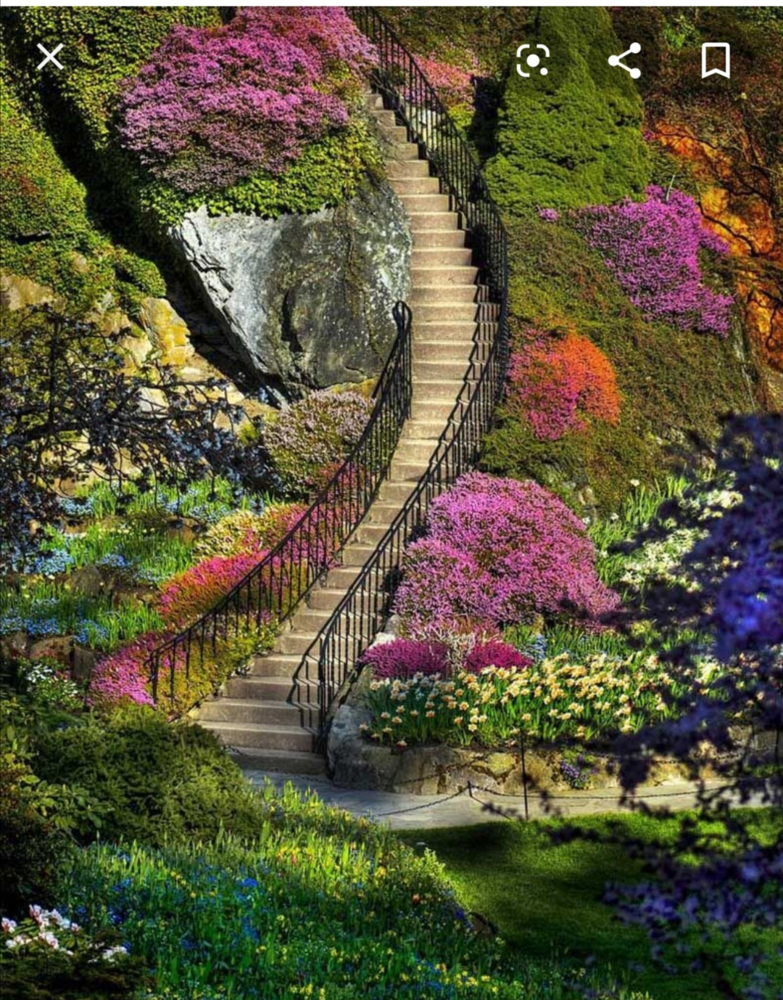
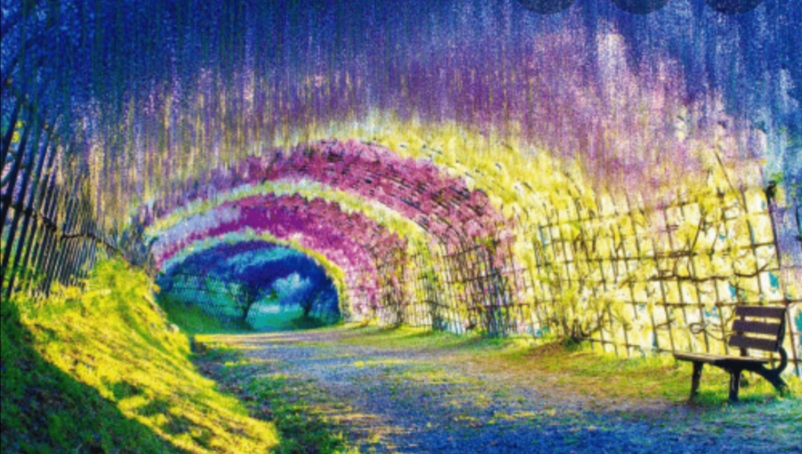
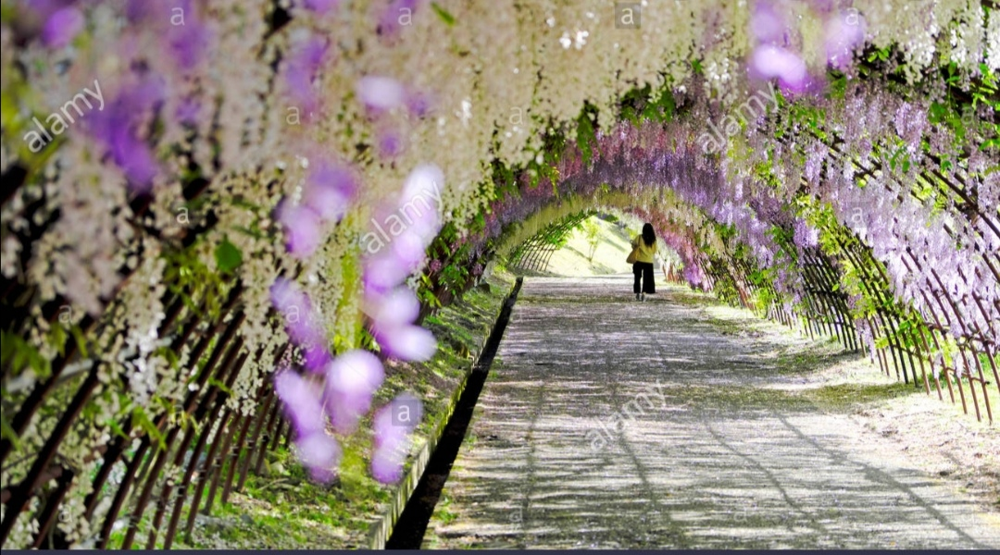
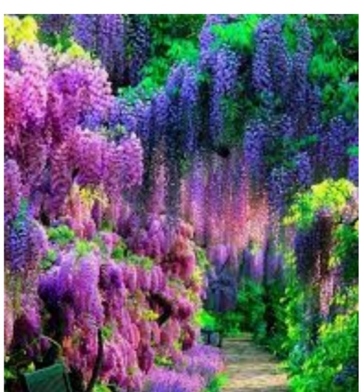
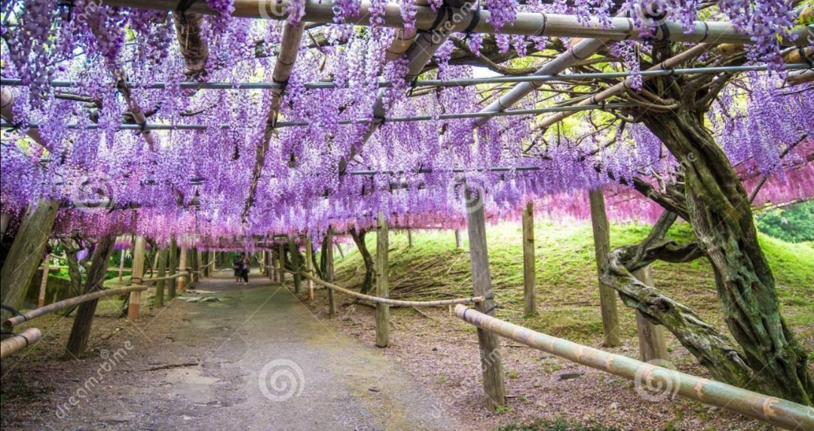
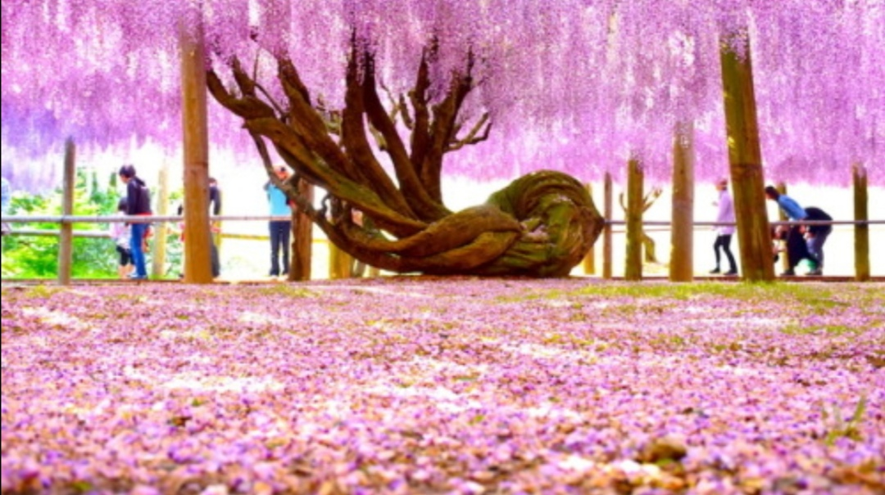
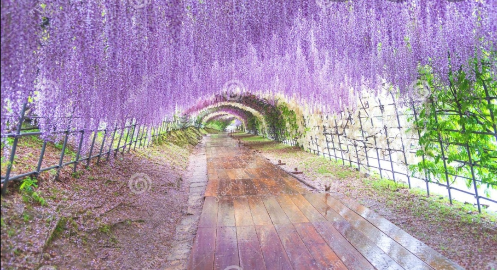
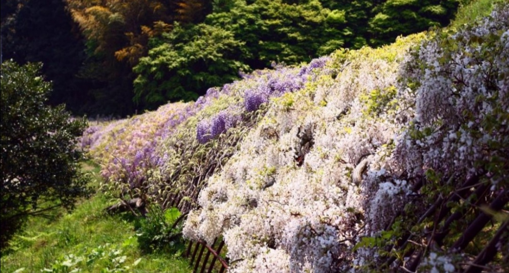
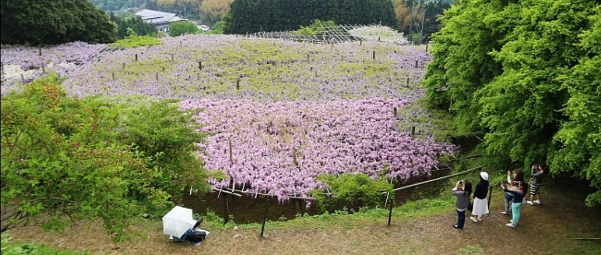

|  |  | Avec son incroyable jardin,KAWACHI nous fait chavirer.C'est comme si nous étions dans un décor enchanté avec un parfum enivrant et des multitudes de couleurs un peu partout qu'on a pas forcement l'habitude de voir. |
|  |  | Cette provision de fleurs glycines couvre une superficie de près de 1000mètres carrés et la floraison continue de progresser depuis 1977. C'est un lieu poétique, magique et assez étonnant qui promet un séjour de ouf,ainsi que des moments inoubliables. |
|  |  |  | |||||||||||||||||||||||
|  |  |